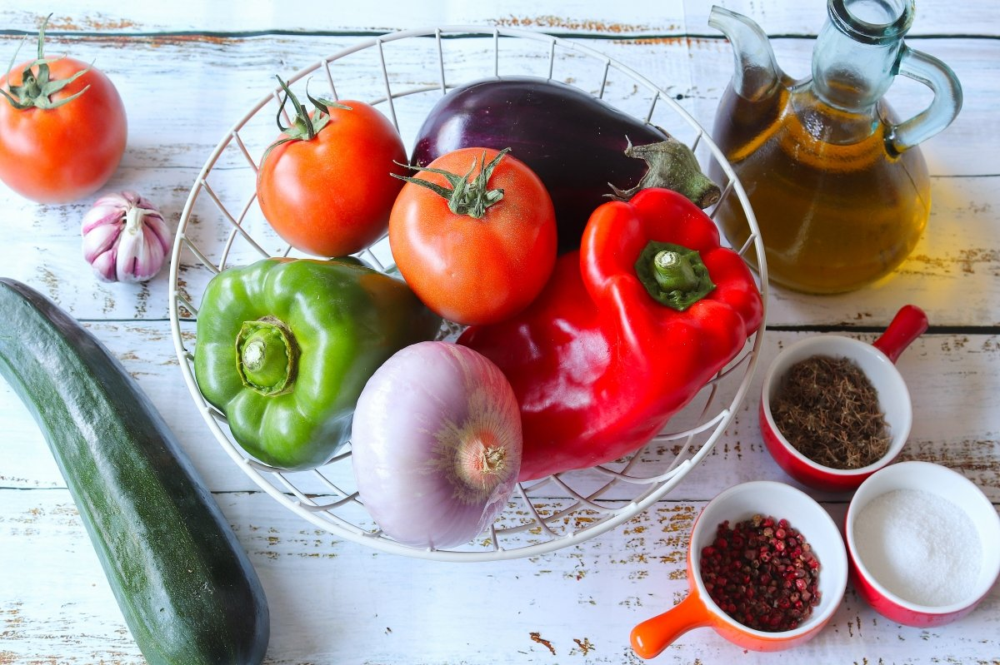
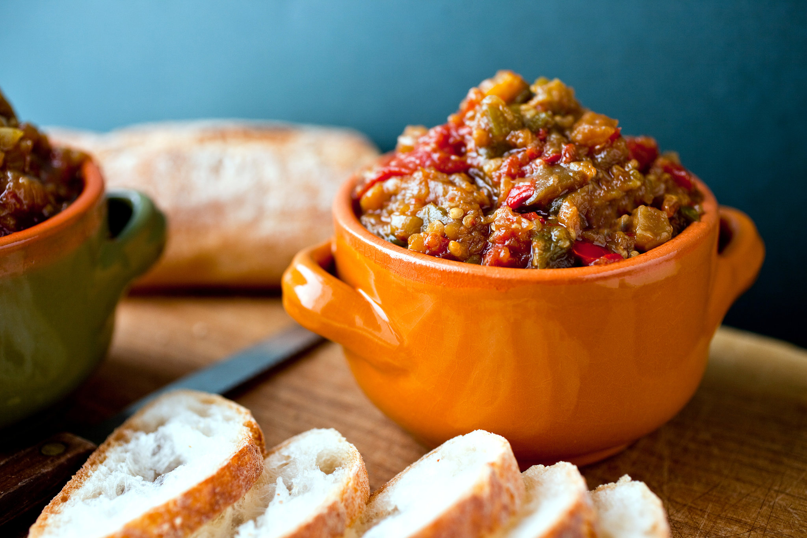
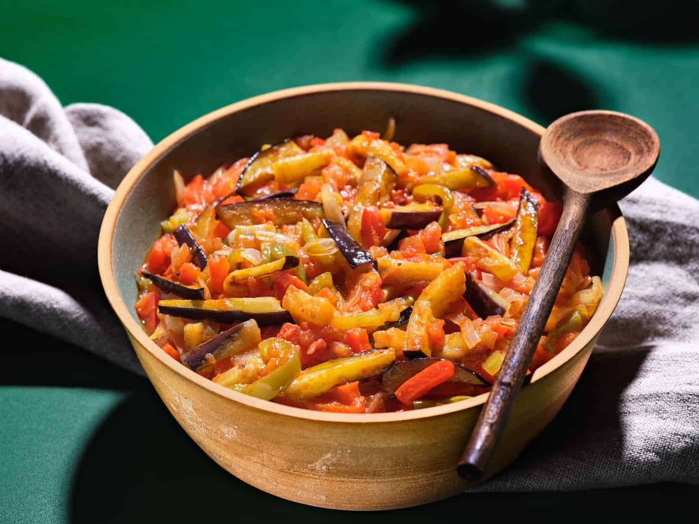
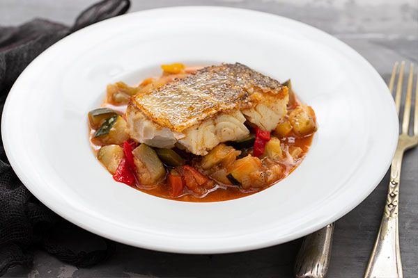
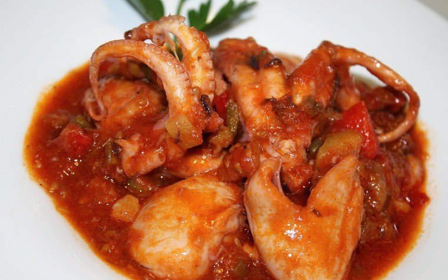
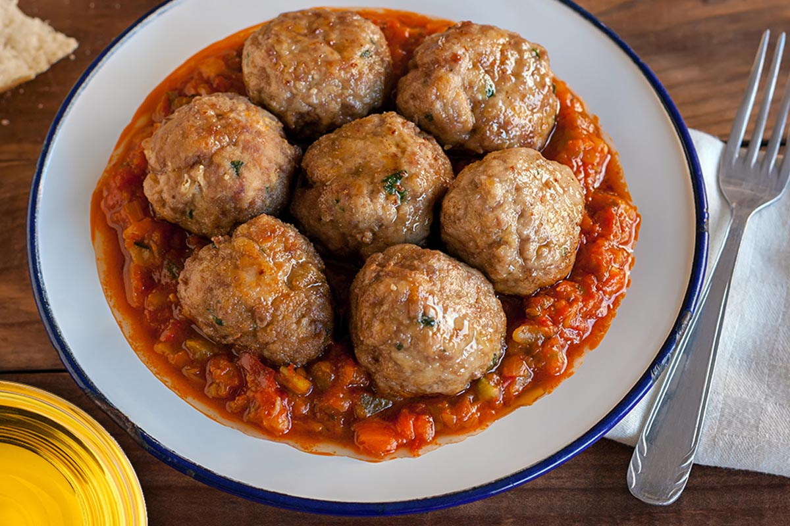

Samfaina
La reina de les salses catalanes… És un dels nostres àpats estrella sempre que es faci amb ingredients naturals.
La samfaina és un plat que tant es pot servir com a plat principal o per acompanyar peixos, carns, ous, pastes… fins i tot amb un tros de pa.
A més a més, és un plat que es pot fer amb antelació i congelar-lo, i és molt fàcil d’emportar-te’l, ja que es pot menjar tant fred com calent.
Ingredients:
- 4 tomàquets
- 2 cebes
- 2 grans d’all
- 2 pebrots vermells
- 2 albergínies
- Oli d’oliva
- Sal al gust
- 2 pebrots verds (opcional)
- Carbassó (opcional)
- Olives negres (opcional)
- Julivert trinxat (opcinal)

Passos a seguir:
- Primer de tot, rentem bé tota la verdura.
- A continuació, pelem els pebrots vermells i verds i traiem les parts sobrants de l’interior. Llavors els piquem i els fem a daus.
- També pelem i tallem a daus el carbassó, les cebes i l’albergínia(es pot deixar la pell). Ho col·loquem tots els dauets a una safata.
- Després, ratllem tots els tomàquets i els reservem.
- Laminem els alls.
- Escalfem la paella i quan estigui calenta hi tirem un raig generós d'oli.
- A mi m'agrada començar aromatitzant l'oli amb l'all, tot i que molta gent hi posa primer la ceba... o tota la verdura de cop.
- Abans que l'all agafi color... hi posarem tot el pebrot, que és la verdura que més triga a coure's. Seguidament, hi posarem la ceba.
- Ben remenat, i uns minutets més. Després acabem de tirar la resta de verdura.
- Quan comencin a veure's fetes, tirem el tomàquet ratllat.
- Afegirem una mica de sucre per a compensar l'acidesa del tomàquet.
- Per últim, a mi m'agrada incorporar una mica de pebre vermell. Això es fa si el tomàquet no té massa color, sobretot en temporada d'hivern, però jo m'he acostumat a posar-ne sempre. M'agrada el gust que agafa.
- Ara, baixeu el foc al mínim. Ho tapem i ho deixarem fer uns 20 minutets. Remeneu de tant en tant. Que no es quedi sense líquid. Si convé, si falta líquid, podeu incorporar un rajolí d'aigua. Al final, ha de quedar gairebé confitat.
- Un cop feta, és interessant deixar-la reposar unes hores... que estarà encara més bona.
Possibles presentacions:





Jo la he acompanyat amb un ou ferrat i quedava bonissima.